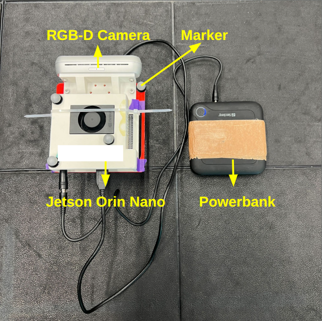
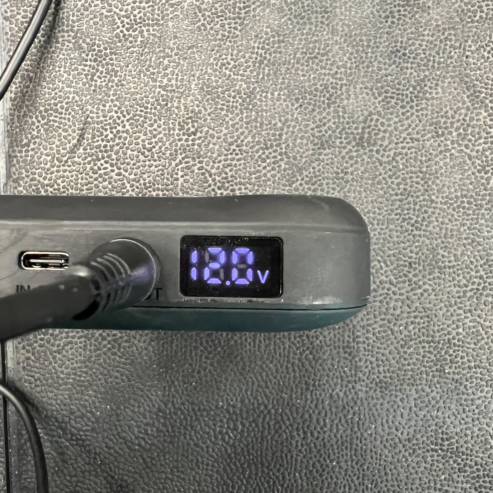
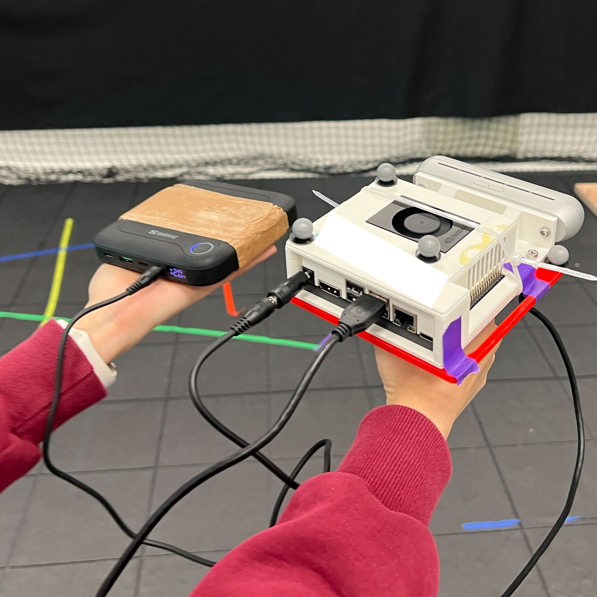
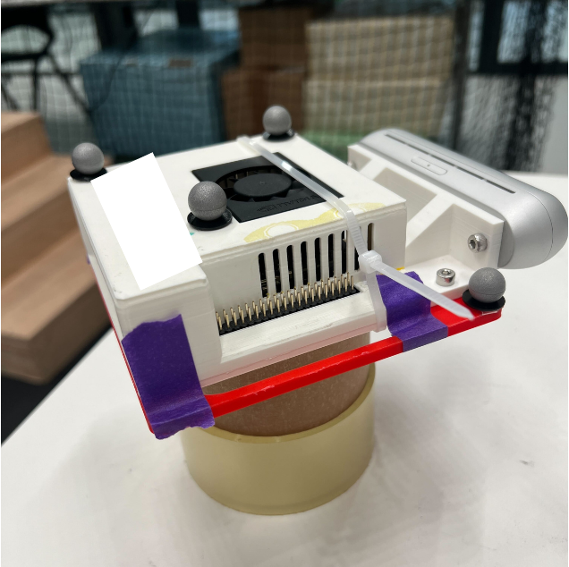
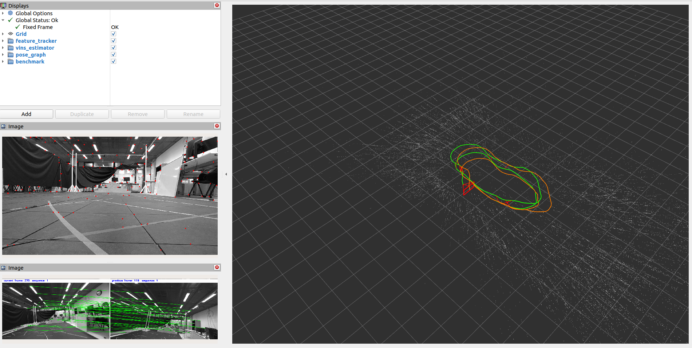

VINS-Mono Demonstration¶
This is instruction of using our handheld demonstrator for VINS-Mono, which is a classical monocular visual SLAM system. The original repository targets ROS1, therefore we use a modified ROS2 version, Qualisys ROS2 project and its ROS messages as the base of our code.
Equipment Overview¶
The mobile experimental platform is used to record data, then the lab computer is used to run VINS-Mono and evaluate.
The mobile experimental platform consists of a Jetson Orin Nano, a RealSense D455 RGB-D camera, and a powerbank. Tracking markers are pre-attached to the platform for use with the camera tracking system.

Safety Instructions:
- Always verify that the powerbank voltage is set to 12.0V before connecting it to the Jetson Orin Nano.

- Hold the platform and powerbank securely during data recording.

- When not in use, place the platform in the designated resting position as shown below to prevent it from tipping over and to keep the markers in their correct positions.

How to use¶
Environment Setup¶
On the computer:
Ensure that all required dependencies are installed on the system (Ubuntu 22.04).
1. Check ROS2 Humble installation.
humble is printed, ROS2 Humble is installed correctly. If an error occurs, please install ROS2 Humble by following the official installation guide, then re-run the commands above to verify.2. Install the system packages required by VINS-Mono. 3. Install
evo for trajectory evaluation.Note: Do not use any Conda virtual environment (Anaconda, Miniconda, etc.), as it is incompatible with ROS. Use the system Python3 installation instead. 4. Install the remaining Python packages required for the evaluation script.
Then uninstall the pip version of
matplotlib to avoid conflicts with the system installation.On the Jetson Orin Nano:
1. Install the RealSense ROS2 driver and Qualisys ROS2 driver follow their official guidance.
Check the hardware:
Connect the RealSense D455 camera to the Jetson Orin Nano via USB-C:
Check the Qualisys driver:
source /opt/ros/humble/setup.bash
cd mocap_ws
colcon build # only needed if not previously built
source install/setup.bash
ros2 launch qualisys_driver qualisys.launch.py
source /opt/ros/humble/setup.bash
cd mocap_ws
source install/setup.bash
ros2 topic echo /rigid_bodies
Project Workspace Setup¶
On the computer:
1. Create the workspace and install the required repositories.
Create the ROS 2 workspace:
src directory, then install and configure their dependencies according to each repository’s official documentation.
After setup, add the eval_trajectory.py, trajectory_aligner.py to the vio directory.
The final workspace structure should be:
vio/
├── ros2_ws/
│ └── src/
│ ├── mocap/
│ ├── mocap4ros2_qualisys/
│ ├── mocap_msgs/
│ └── vins_mono_ros2/
├── eval_trajectory.py
└── trajectory_aligner.py
Place the customized configuration file
config_asig.yaml at the following path:Make sure the filename and directory structure match exactly, as the system expects the configuration file at this location.
2. Build the ROS Packages.
If
colcon is not found, install it with:Ethernet Configuration¶
Ensure both the computer and the Jetson Orin Nano are connected to the local Wi-Fi. Open the network settings on the computer and set the IPv4 address of the network interface to Manual. Set the IPv4 address to 192.168.101.xx (for example) where xx can be freely chosen. Set the network mask to 255.255.255.0.
Launch Drivers on the Jetson Orin Nano¶
From the computer, establish an SSH connection to the Jetson Orin Nano. Note that an SSH connection must be established in every new terminal session before executing commands on the Nano.
1. Launch the RealSense driver.
# SSH Terminal 1
source /opt/ros/humble/setup.bash
ros2 run realsense2_camera realsense2_camera_node --ros-args -p unite_imu_method:=2 -p rgb_camera.color_profile:=1280x720x15
# SSH Terminal 2
source /opt/ros/humble/setup.bash
cd mocap_ws
# colcon build # only needed if not previously built
source install/setup.bash
ros2 launch qualisys_driver qualisys.launch.py
Record the data¶
Record guidelines
- Place the platform at the center of the motion capture area before starting.
- Walk freely within the lab space and ensure the trajectory includes at least one loop closure.
- Do not approach the edges of the black padding, as this may cause the camera tracking system to lose sight of the markers.
- Keep the recording duration within approximately 45 seconds, as the Jetson Orin Nano may begin dropping messages beyond this limit.
With both drivers running, begin recording data in a third SSH terminal on Jetson Orin Nano. You may change my_data if desired:
# SSH Terminal 3
source /opt/ros/humble/setup.bash
# To avoid errors in finding mocap_qualisys topic
cd mocap_ws
source install/setup.bash
# Record data
mkdir -p ~/example_data # create directory if it does not exist
ros2 bag record /camera/camera/color/image_raw /camera/camera/imu /rigid_bodies --output example_data/my_data
Once you have completed your recording, press Ctrl+C in SSH Terminal 3 to stop recording. The bag file will be saved to example_data/my_data. Stop both the RealSense and Qualisys drivers at this point.
Transfer the recorded data to the computer.
Run VINS-Mono¶
On the computer:
Run VINS-Mono on your recorded data. In the working directory on the computer, open four terminals and execute the commands in the specified order:
# Terminal 1
source ros2_ws/install/setup.bash
ros2 launch feature_tracker vins_feature_tracker.launch.py
# Terminal 4
source ros2_ws/install/setup.bash
mkdir -p results/
ros2 bag record --output results/vinsmono_data_my_data /pose_graph/pose_graph_path /vins_estimator/path /rigid_bodies /leica/position

Once the sequence has finished, press Ctrl+C in Terminal 4 to stop recording.
Evaluation¶
After successfully running VINS-Mono, evaluate the results using the evo package. First, generate the trajectory files:
python3 eval_trajectory.py --bagpath results/vinsmono_data_my_data --rigid-body-name cam --save-path ./results/
Then run the evaluation:
This computes the Absolute Pose Error (APE) of the estimated trajectory. A mean translation error of approximately 0.1 - 0.2m is expected.